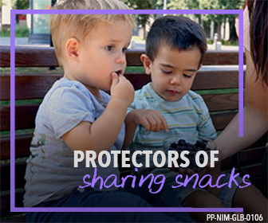
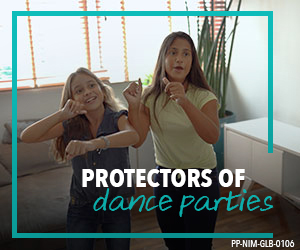
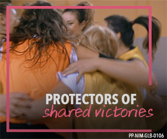
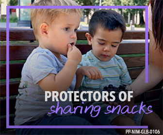
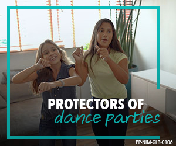
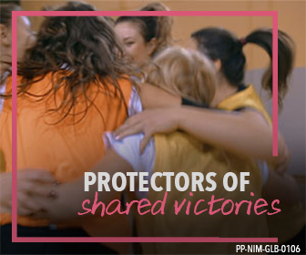

Protectors Campaign
Meningococcal meningitis is a rare but dangerous disease that is spread by common sharing behaviors. It affects people of all ages, but some of the highest incidence of the disease is seen in infants, children, adolescents, and young adults.
The Pfizer Consumer Meningococcal Meningitis Prevention campaign is a global, unbranded effort to drive awareness and education of meningococcal disease, to connect with the parents and caregivers of kids, and to empower those parents to be protectors of their kids and the things they hold dear.
In partnership with the Pfizer meningococcal franchise, our team supported the campaign by designing digital assets, in both static and video formats, that portray age-appropriate subjects either engaging in sharing behaviors or interacting with healthcare providers. They are intended to drive traffic to the campaign website, and to spur conversations between parents and healthcare providers.
Contributions
 





Photography
The target audience for the campaign comprises the parents and caregivers of kids and adolescents. This audience is further segmented in the campaign photography by the age of the children, yielding four distinct groups: infants, children, younger adolescents, and older adolescents.
Design Elements
The colored frame element is the key graphic component of the campaign. It is used not only as a consistent branding element but also as a visual reminder of the people and activities that need to be protected against meningococcal meningitis.
The color of the colored frame varies according to the target audience:
- Infants: Green
- Children: Purple
- Younger adolescents: Teal
- Older adolescents: Red